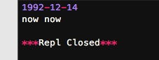
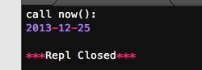

函数也是一个对象，而且函数对象可以被赋值给变量，所以，通过变量也能调用该函数。
函数对象有一个__name__属性，可以拿到函数的名字：
# -*- coding: utf-8 -*-
def now():
print '1992-12-14'
f = now
f()
print now.__name__,f.__name__

现在，假设我们要增强now()函数的功能，比如，在函数调用前后自动打印日志，但又不希望修改now()函数的定义，这种在代码运行期间动态增加功能的方式，称之为“装饰器”（Decorator）。
本质上，decorator就是一个返回函数的高阶函数。所以，我们要定义一个能打印日志的decorator，可以定义如下：
def log(func):
def wrapper(*args, **kw):
print 'call %s():' % func.__name__
return func(*args, **kw)
return wrapper
观察上面的log，因为它是一个decorator，所以接受一个函数作为参数，并返回一个函数。我们要借助Python的@语法，把decorator置于函数的定义处：
@log
def now():
print '2013-12-25'

练习题：请编写一个decorator，能在函数调用的前后打印出'begin call'和'end call'的日志。
# -*- coding: utf-8 -*-
def log(func):
def wrapper(*args, **kw):
print 'begin call'
res = func(*args, **kw)
print 'end call2'
return res
return wrapper
@log
def now():
print 'test'
now()

练习题：再思考一下能否写出一个@log的decorator，使它既支持：
@log
def f():
pass
又支持
@log('execute')
def f():
pass
解答：
# -*- coding: utf-8 -*-
import functools
def log(text):
def decorator(func):
@functools.wraps(func)
def wrapper(*args ,**kw):
if len(text)>0:
print '%s %s()' % (text, func.__name__)
else:
print '%s()' % func.__name__
return func(*args,**kw)
return wrapper
return decorator
@log('sdfsf')
def now():
print 'test'
now()